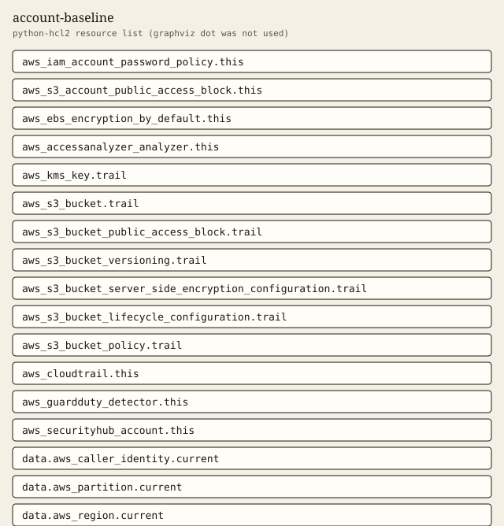

account-baseline
Password policy, public access block, EBS encryption, Access Analyzer, and multi-region CloudTrail.
Tests passed 6 of 6. Failed 0.
Inputs
| Name | Type | Required | Description |
|---|---|---|---|
| enable_guardduty | bool | no | Create a GuardDuty detector. Default is false because GuardDuty is a billable service. |
| enable_security_hub | bool | no | Turn on Security Hub. Default is false because Security Hub is a billable service. |
| minimum_password_length | number | no | Minimum IAM user password length. The module default is 14. |
| name | string | yes | Name used for the CloudTrail, the trail bucket, and the account analyzer. |
| tags | map(string) | no | Extra tags merged onto every taggable resource. ManagedBy and Module are always set by the module. |
| trail_log_expiration_days | number | no | Days before CloudTrail objects in the trail bucket expire. |
Outputs
| Name | Description |
|---|---|
| access_analyzer_type | IAM Access Analyzer type. This module creates an account analyzer. |
| caller_context | Account, partition, and region resolved from data sources. |
| cloudtrail_is_multi_region | Whether the trail records events in every region. |
| cloudtrail_log_file_validation | Whether CloudTrail log file validation is on. |
| ebs_encryption_enabled | Whether new EBS volumes are encrypted by default. |
| guardduty_detector_count | Number of GuardDuty detectors. Zero unless enable_guardduty is true. |
| password_policy_minimum_length | Minimum password length enforced by the account password policy. |
| s3_account_public_access_block | Account-level S3 public access block flags. |
| security_hub_count | Number of Security Hub account resources. Zero unless enable_security_hub is true. |
| tag_audit | Tags on every taggable resource this module creates. |
| trail_bucket_name | Name of the encrypted CloudTrail bucket. |
| trail_bucket_sse_algorithm | Server-side encryption algorithm applied to the trail bucket. |
Example
The caller supplies the region. This example does not embed an account id.
module "baseline" {
source = "../.."
name = "demo-baseline"
tags = {
Example = "basic"
}
}
Tests
- defaults_locked passed
- custom_password_length passed
- billable_detectors_on passed
- shorter_log_retention passed
- reject_short_password passed
- reject_bad_name passed
Mock plan excerpt
mocked provider: ARNs and IDs are simulated. This excerpt is from terraform test with a mocked provider, not a live plan.
mocked provider: ARNs and IDs are simulated. This is terraform test -verbose, not a live plan.
tests\account-baseline.tftest.hcl... in progress
run "defaults_locked"... pass
Terraform used the selected providers to generate the following execution
plan. Resource actions are indicated with the following symbols:
+ create
Terraform will perform the following actions:
# aws_accessanalyzer_analyzer.this will be created
+ resource "aws_accessanalyzer_analyzer" "this" {
+ analyzer_name = "demo-baseline-account"
+ arn = (known after apply)
+ id = (known after apply)
+ tags = {
+ "ManagedBy" = "terraform"
+ "Module" = "account-baseline"
+ "Owner" = "platform"
}
+ tags_all = (known after apply)
+ type = "ACCOUNT"
}
# aws_cloudtrail.this will be created
+ resource "aws_cloudtrail" "this" {
+ arn = (known after apply)
+ enable_log_file_validation = true
+ enable_logging = true
+ home_region = (known after apply)
+ id = (known after apply)
+ include_global_service_events = true
+ is_multi_region_trail = true
+ kms_key_id = (known after apply)
+ name = "demo-baseline"
+ s3_bucket_name = (known after apply)
+ tags = {
+ "ManagedBy" = "terraform"
+ "Module" = "account-baseline"
Resources
graphviz dot was not installed. The figure is a python-hcl2 resource list.

Changelog
Changelog
All notable changes to this module are documented in this file.
The format is based on Keep a Changelog, and this module uses Semantic Versioning.
[1.0.0] - 2026-10-03
Added
- Account password policy, public access block, EBS encryption, Access Analyzer, and a multi-region CloudTrail.
- Optional GuardDuty and Security Hub switches, both off by default.
Billable item names
Names only. This page does not quote a price. Example amounts, including a budget limit, are placeholders and are not recommendations. GuardDuty and Security Hub stay off unless a module switch is set, because those services are billable.
- AWS CloudTrail
- Amazon S3
- AWS Key Management Service
- IAM Access Analyzer
- Amazon GuardDuty
- AWS Security Hub